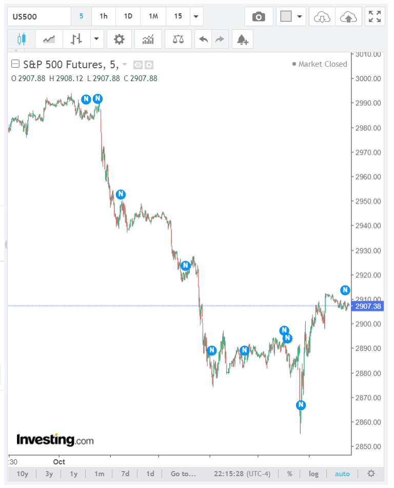

连续大跌大涨后，真空基本不填补，在高于最低点或低于最高点的地方长时间震荡
- 这个已经具备了反转的能力，但是它一直在高于极点的地方震荡很久，需要再次加速。就是它再次走低，创新低或者新高后，立刻拉回，然后全面反转。
- 如果是好几天的走势，组合成了这个走势，那么它再次下跌或者上涨的走势，幅度会非常的大，当天会有明显的指示，速度很快，形成了反转。这个应该按照当天的指示来做。
- 这个走势不能用两段走势的第二段一定比第一段强来分析，它没有填补真空，一直走平。其实第二段只要创新低就够了。不需要超过第一段的幅度和速度。

图示：11：10大跌，形成了两段下跌走势，已经具备了反转的条件。它一直在大幅震荡，没有在最低点停留。这时需要一个加速的动作。
这个加速的动作就是创新低，不填补真空的情况下，创新低。创新低后，立刻拉回。大涨。11：50是大涨的第一浪。


图示：这个是两天加上一夜的时间，形成了5浪下跌。第一浪下跌50个点。第二浪是晚上下跌的，20个点，第三浪是白天低开走低，
也跌了50多点。反转了。它一晚上，都在高于最低点的地方震荡，其实已经反转了。根据这个走势，它需要跌破低点。因为这个是多日的走势，所以当天开盘，
它是先走低一个bar，表示是向下的方向。然后快速冲高，然后走平，这样冲高的加速坐实了。虽然这个没有叠加走势，但是速度很快加上走平。已经是加上了。它然后大跌。立刻拉回原位，然后再次小跌。
拉回。这样也符合了相对弱势的下跌。这三个条件都指向了下跌是唯一的方向。果然大跌。然后它开始反弹，越过了高点，创新高。

图示：开盘后，先下跌两分钟，然后冲高，说明走势是跌势。它立刻下跌，然后稍微反弹后，没有填补真空，就不断的震荡很久。这个就是
高于低点，然后长时间震荡的走势。6：50，它下跌，低于低点。可以看到，它的第二段下跌不如第一段下跌激烈。但是也构成了加速，因为这个走势的特点。另外一个角度看，它是走平后下跌，
也是一种加速方式。所以反转了。